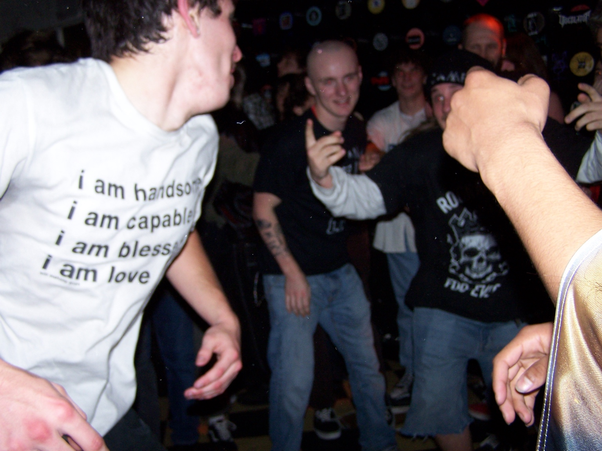

“I still remember the sound of that morning wind, and how it felt like something old was leaving.”
“in the past, if i was ever asked to give advice on life, i’d say: “don’t let anyone make you forget who you are.” but today, i’ve realized— i wouldn’t be who i am now if i hadn’t forgotten who i was. maybe the advice now is: “to truly become, you have to forget but don’t be afraid to forget.” i don’t miss the past versions of me. i mourn them. i see them. i thank them. but i’m glad they’re gone. i’m glad i’m here instead. keep growing. i love you. ”
“half of your suffering comes from trying to understand learn to be and you'll be free.”